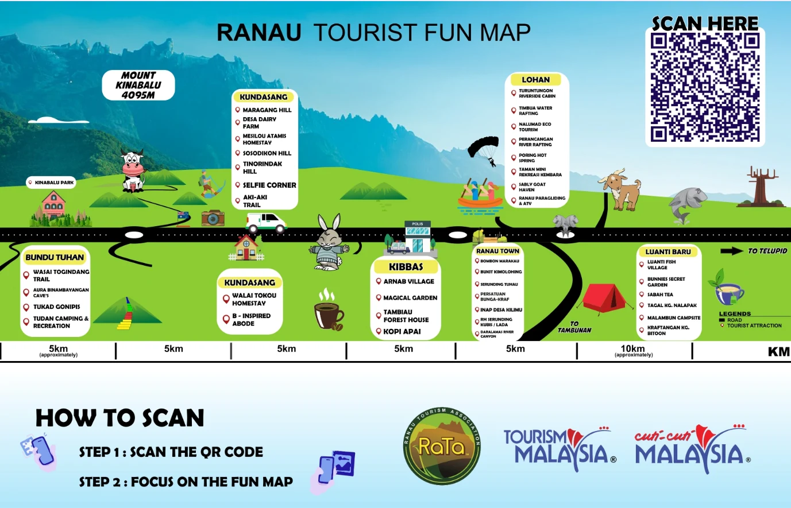
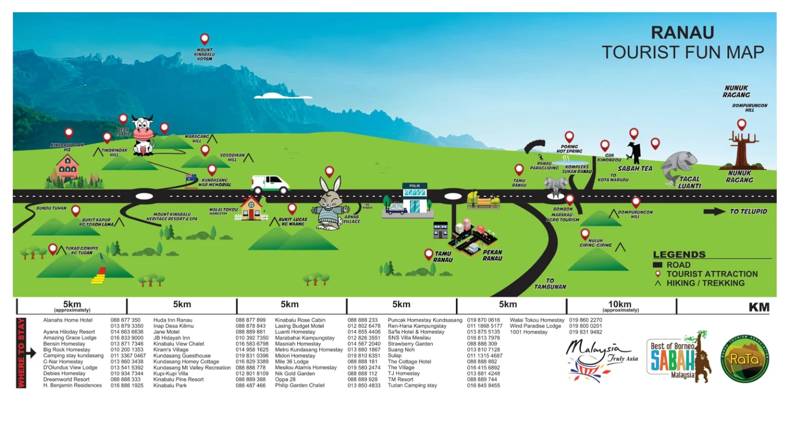

Daerah Ranau terkenal dengan Gunung Kinabalu (4,095m), ladang
tenusu, teh Sabah, sungai untuk rafting, air panas serta homestay
yang mesra. Gunakan peta di bawah untuk merancang perjalanan anda
dari Bundu Tuhan hingga ke Luanti Baru.
4,095mGunung Kinabalu
6Kawasan tarikan utama
40+Tarikan & aktiviti
80+Pilihan penginapan

Ranau Tourist Fun Map: jarak antara kawasan adalah
anggaran.Buka saiz penuh
Tarikan mengikut kawasan
Disusun mengikut laluan dari Kinabalu Park menghala ke Telupid.
Bundu Tuhan
Kawasan kaki Gunung Kinabalu
Wasai Togindang Trail
Aura Binambayangan Cave's
Tukad Gonipis
Tudan Camping & Recreation
Kundasang
Ladang tenusu & bukit pemandangan
Maragang Hill
Desa Dairy Farm
Mesilou Atamis Homestay
Sosodikon Hill
Tinorindak Hill
Selfie Corner
Aki-Aki Trail
Walai Tokou Homestay
B-Inspired Abode
Kibbas
Desa kampung & taman
Arnab Village
Magical Garden
Tambiau Forest House
Kopi Apai
Pekan Ranau
Produk tempatan & kraf
Bombon Marakau
Bukit Kimolohing
Serunding Tuhau
Persatuan Bunga-Kraf
Inap Desa Kilimu
RH Serunding Kubis / Lada
Daralamas River Canyon
Lohan
Pengembaraan & air panas
Turuntungon Riverside Cabin
Timbua Water Rafting
Nalumad Eco Tourism
Perancangan River Rafting
Poring Hot Spring
Taman Mini Rekreasi Kembara
Sably Goat Haven
Ranau Paragliding & ATV
Luanti Baru
Arah Telupid
Luanti Fish Village
Bunnies Secret Garden
Sabah Tea
Tagal Kg. Nalapak
Malambun Campsite
Kraftangan Kg. Bitoon
Tarikan dan lokasi lain
Kinabalu Park HQ
Kundasang War Memorial
Gua Kimondou
Nuluh Giring-Giring
Dompurungon Hill
Nunuk Ragang
Bukit Kapur, Kg. Tobok Lama
Bukit Lugas, Kg. Waang
Komplek Sukan Ranau
Tamu Ranau
Tempat penginapan
Senarai hotel, chalet, homestay dan tapak perkhemahan beserta nombor
telefon untuk tempahan.

Lihat saiz penuh untuk membaca nombor telefon.Buka saiz penuh
Sila sahkan harga, ketersediaan dan nombor telefon terus dengan
pengendali penginapan sebelum membuat tempahan.
Peta dengan kerjasama Ranau Tourism Association (RaTa), Tourism
Malaysia dan Best of Borneo Sabah. Untuk pertanyaan, sila
hubungi Pejabat Daerah Ranau.